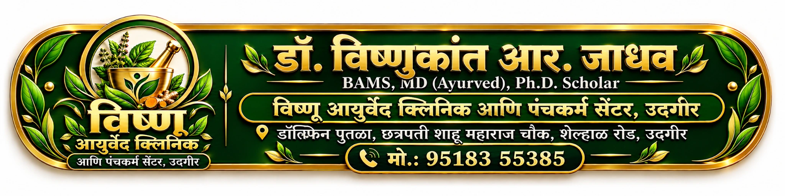

VISHNU AYURVED CLINIC & PANCHAKARMA CENTER
आजचा आढावा
डेमो आवृत्ती — खालील रुग्ण काल्पनिक आहेत. येथे खऱ्या रुग्णांची माहिती भरू नका.
नमस्कार, डॉ. जाधव
तपासणीपासून फॉलो-अपपर्यंत, एकाच ठिकाणी.
नियोजित भूमिका: Owner Admin + Doctorनमुना OPD यादी
रुग्ण शोध · नमुना
पंचकर्म विभाग
पुढील टप्प्यात: पूर्वकर्म, प्रधानकर्म, पश्चात्कर्म, दिवसनिहाय नोंद आणि कोर्स सारांश.
या आवृत्तीत उपचार किंवा मात्रा सुचवली जात नाही.
मासिक व कस्टम अहवाल
पुढील टप्प्यात: एकूण भेटी आणि स्वतंत्र रुग्णसंख्या, नवीन/फॉलो-अप, गाव, निदान आणि पंचकर्मानुसार फिल्टर; PDF/CSV निर्यात.
क्लिनिकची माहिती
Dr. Jadhav V. R.
BAMS, MD (Ayurved), Ph.D. Scholar
Dolphin Statue, Chhatrapati Shahu Maharaj Chowk,
Shelhal Road, Udgir · 95183 55385
Owner: drvishnukantdamchu@gmail.com
Firebase login आणि काल्पनिक Patient Intake syncची चाचणी झाली आहे. नमुना clinical नोंदींसाठी Firestore rules publish आहेत. काल्पनिक clinical, prescription, Panchakarma आणि फाइल्स या डिव्हाइसवर टिकतात. त्यांचा manual backup/restore उपलब्ध आहे; इतर डिव्हाइसवर Cloud sync आणि स्वयंचलित Drive backup अद्याप नाही.
